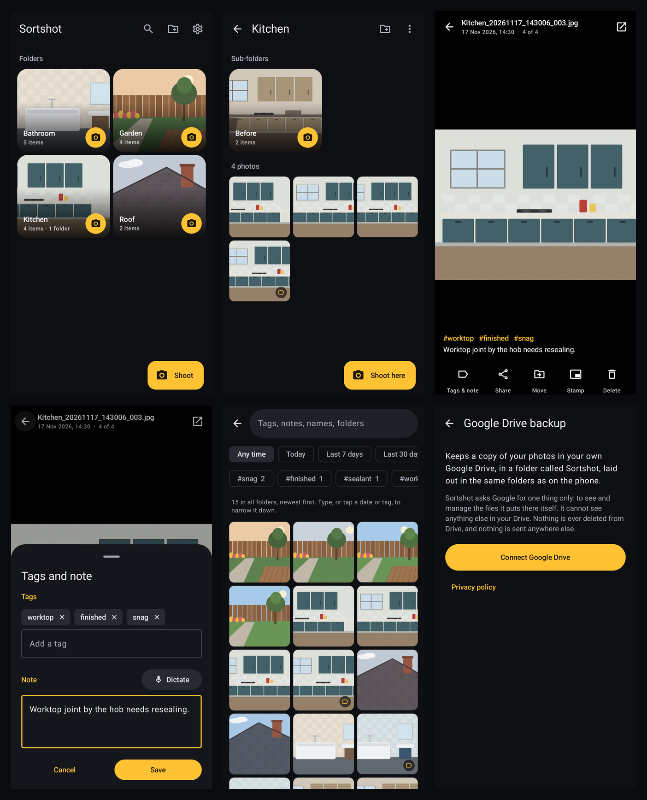

Pick a folder. Tap Shoot. Your photos land in it.
On a Samsung phone every photo goes into one Camera folder. Sortshot fixes that without replacing the camera: choose a folder, tap Shoot, and the phone's own camera opens with every mode it has. When you close it, what you took is in your folder.
Download Sortshot Android 13 or newer · about 4 MB · what is new

What it does
Your camera, your folders
Sortshot opens the phone's full camera, with every mode it has, for photos and video. Shots are moved, not copied, so there is one copy and the Camera folder stays clear.
Only what you shot through it
Filing stops the moment the camera closes. Photos you take by opening the camera yourself are never touched.
Folders and sub-folders
They live in DCIM › Sortshot, so each one shows as an album in the Gallery. Names you can read on a computer: Kitchen_20261117_060812_001.jpg.
One tap from anywhere
A home-screen shortcut for each folder, a quick-settings tile, and a Switch folder button while you shoot.
Tags and notes
On one photo or many at once. Say a note instead of typing it. Tags typed before you shoot go on every shot of that session.
They travel with the photo
Tags and notes are written into JPEG files in the standard place, so they are still there on a computer or in Drive. The picture itself is not touched.
Search
Across every folder, by tag, note, file name, folder or date.
Stamped copies
A copy with the date, folder, note, tags or location printed in the corner. The original stays as it was.
PDF report and zip
A folder as a PDF, two photos to a page with their notes, or as a zip with a list of every photo's tags and notes.
Google Drive backup
Chosen folders are copied to a Sortshot folder in your own Drive, laid out the same way, over Wi-Fi. Sortshot can only see the files it put there.
Hide from the Gallery
A switch for each folder, or for all of them. On, the photos show only in Sortshot. Off, they are back straight away.
A 30-day bin
Anything you delete in Sortshot waits 30 days and goes back with one tap.
What it will not do
- No camera of its own. It uses the one on your phone, so nothing about how your photos look changes.
- No adverts, accounts or tracking. Nothing leaves the phone unless you switch on Google Drive backup.
- Nothing deleted from Drive. A photo deleted on the phone stays in your Drive.
Installing
- Tap Download and open the file. Android will ask you to allow installs from your browser or file app.
- Play Protect may ask about an app it has not seen. Sortshot asks for access to all files because moving photos out of the Camera folder needs it.
- Open Sortshot and switch on the three things it asks for: All files access, Usage access and Notifications.
- Usage access is locked at first, because the app came from a download and not the Play Store. Try to switch Sortshot on once, so your phone shows "Restricted setting". Then open Settings, Apps, Sortshot, tap the three dots at the top right and choose Allow restricted settings. After that the switch works. The app shows these steps with a button for each.
The app checks this site's releases for a newer version and tells you when there is one. That check can be switched off in Settings.